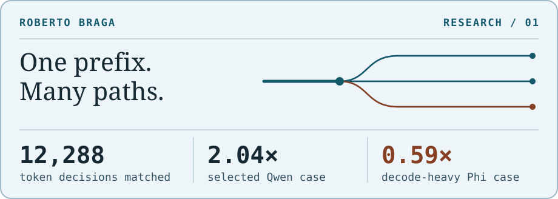

Research / 01 · Inference systems
Stochastic
Provenance
Share the prefix.
Keep the randomness separate.

01 / Question
What can two branches share?
If a model reads the same prompt 32 times to give you 32 answers, which work can you skip? The model can process the prefix once. The harder part is making sure each answer still gets its own random draws. Sharing those draws can make branches move together even when each one looks fine in isolation.
The study separates the state you can reuse from the sampling events that belong to each path. Then it checks token choices against a reference before counting time or memory.
02 / Findings
Agreement first. Speed second.
All 192 trajectories and 12,288 token decisions matched across three models and two numerical policies in the tested semantic matrix. Every pair received the same path-local Philox draws. Reusing one stream across four paths collapsed four distinct trajectories to one in all six negative-control cells.
Measured on one RTX 5060 Ti
- Qwen3-0.6B Selected workload · paired records
- 2.04× baseline speed 46.7% lower peak allocated GPU memory
- Phi-4-mini Decode-heavy · aggregate evidence
- 0.59× baseline speed 28.2% lower peak allocated GPU memory
What these numbers do not tell you
The timing baseline duplicates the prefix across the batch. The tests do not compare production serving engines or establish a general speedup. Semantic counts and Phi timings are historical aggregates; only selected Qwen timing pairs are included. Peak allocated GPU memory is not whole-device usage or energy consumption.
03 / Reproduce
Start without a GPU.
The CPU demo checks whether each independently sampled branch keeps its token decisions when it shares the prefix. It is a semantic check, not a latency benchmark. The code is Apache 2.0.